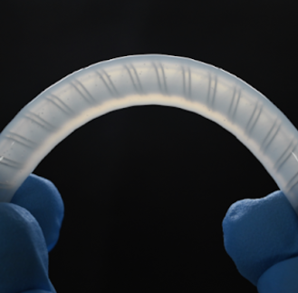
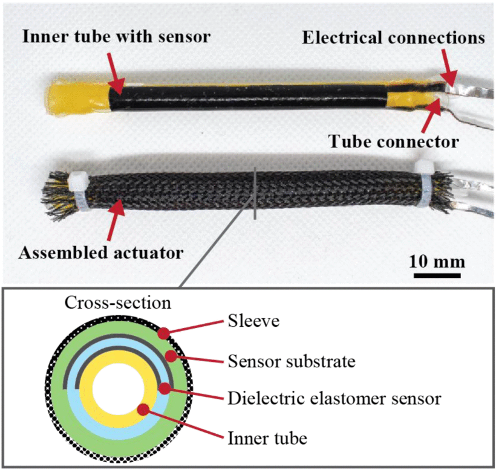

Projects
Selected first-author research in soft actuator design, from concept to fabrication.
Flexible Electromagnetic Actuators with Kresling-Origami Housing for Modular Soft Robots
Designed a flexible electromagnetic actuator built into a Kresling-origami housing, enabling foldable, modular units for soft robotic systems. The origami structure allows the actuator to compress, twist, and reconfigure while retaining consistent actuation performance.
R. Kanno, S. Bottoni, P. H. Nguyen, M. Kovac · IEEE 9th Int. Conf. on Soft Robotics (RoboSoft), 907–912
Low-Cost 3D-Printed, Biocompatible Ionic Polymer Membranes for Soft Actuators
Developed a low-cost fabrication route for biocompatible ionic polymer membranes using standard 3D printing equipment, removing the need for specialized cleanroom processes and lowering the barrier to producing IPMC-based soft actuators.
M. K. N. Trümpler, R. Kanno, N. David, A. Huch, P. H. Nguyen, M. Vatani, et al. · IEEE 8th Int. Conf. on Soft Robotics (RoboSoft)
3D-Printed Biodegradable Soft Actuators from Nanocellulose-Reinforced Gelatin Composites
Contributed to a fully biodegradable soft actuator platform built from nanocellulose- reinforced gelatin composites, 3D printed for tunable mechanical properties — demonstrating a sustainable alternative to conventional elastomer-based actuators.
O. Müller, A. Poulin, X. Aeby, R. Emma, R. Kanno, T. Nagai, J. Shintake, et al. · Advanced Sustainable Systems 9(2), 2400450 / 2570021 (cover)
Edible Soft Actuators Based on Konjac Glucomannan for Underwater Operation
Designed edible, fully biodegradable soft actuators from konjac glucomannan gel, engineered for underwater actuation. Demonstrated a safe, ingestible alternative to conventional silicone-based actuators for environmentally sensitive applications.
R. Kanno, B. Kwak, M. Pankhurst, J. Shintake, D. Floreano · Advanced Intelligent Systems 6(5), 2300473
Hybrid Soft Electrostatic Metamaterial Gripper for Multi-Surface, Multi-Object Adaptation
Developed a hybrid gripper combining soft electrostatic adhesion with a metamaterial structure, enabling reliable grasping across varied surface geometries and object shapes without switching end-effectors.
R. Kanno, N. Pham H., J. Pinskier, D. Howard, S. Song, M. Kovac · IEEE 7th Int. Conf. on Soft Robotics (RoboSoft), 851–857

Silicone-Based Highly Stretchable Multifunctional Fiber Pumps
Engineered stretchable fiber-based fluidic pumps from silicone, combining pumping function with mechanical compliance — enabling integration directly into wearable or soft robotic systems without rigid pump housings.
R. Kanno, K. Shimizu, K. Murakami, Y. Shibahara, N. Ogawa, H. Akai, et al. · Scientific Reports 14(1), 4618
Biodegradable Electrohydraulic Soft Actuators
Developed electrohydraulic soft actuators built entirely from biodegradable materials, demonstrating high-speed actuation performance comparable to conventional HASEL actuators while eliminating persistent plastic waste.
R. Kanno, F. Caruso, K. Takai, Y. Piskarev, V. Cacucciolo, J. Shintake · Advanced Intelligent Systems, 2200239

Self-Sensing McKibben Artificial Muscles Embedded with Dielectric Elastomer Sensor
Integrated a dielectric elastomer sensor directly into a McKibben pneumatic muscle, giving the actuator built-in proprioception — contraction state can be read out electrically without external sensors or vision systems.
R. Kanno, S. Watanabe, K. Shimizu, J. Shintake · IEEE Robotics and Automation Letters 6(4), 6274–6280
Rapid Fabrication Method for Soft Devices Using Off-the-Shelf Conductive and Dielectric Acrylic Elastomers
Integrated a dielectric elastomer sensor, electro-adhesion, and haptic device into single system ulitizing off-the-shelf acrylic electrode with rapid prototyping.
R. Kanno, S. Watanabe, K. Shimizu, J. Shintake · IEEE Robotics and Automation Letters 6(4), 6274–6280